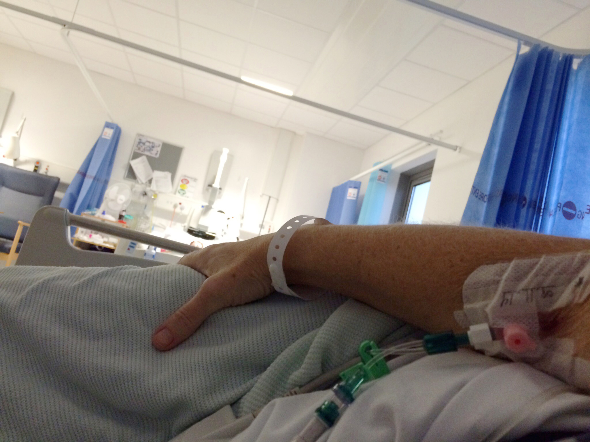

Welcome to the Archives
It's quite hard to get lost!
It's quite hard to get lost!
Today i went looking for strange flowers.
When i got home, I ate the flowers. It was delicious with just a pinch of salt and mashed cucumber.

This is my home now... they say I might be able to walk in four months if I'm lucky.
Before you leave, take a look at these thingies...

During the attempted production of this creation,
I discovered that CSS manipulation is quite 'fiddly', lots of googling solves most problems of course and alas - there is color and some managed styling now - optimized I hope for phone-sized browsing.
Adding unaccounted elements is troublesome and requires special coding. I wish I choose a more 'general' approach to handling content for grids.
I'll keep fiddling with this during the course as i pick new tricks up to try and get it 'proper' I suppose.
I spent alot of time experimenting with strange behaviours that I thought could be 'cool' but ended up - in my opinion - tasteless and a waste of time.
I imagine working with someone elses pre-made stylesheets saves alot of time in this regard - instead of writing everything up from scratch, though I embrace this opportunity to learn something new and figure I can only get better the more I practice.